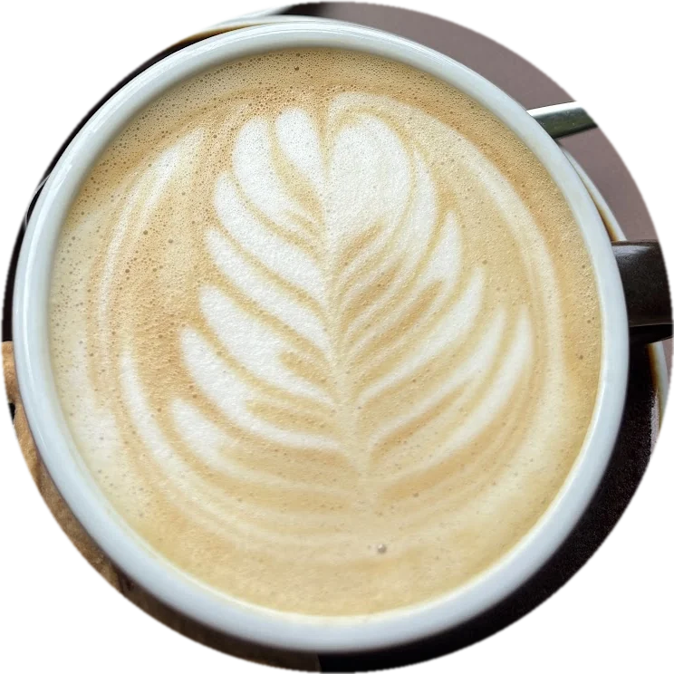
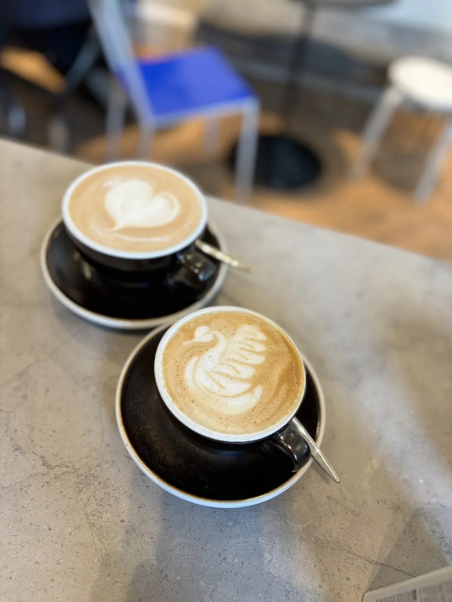
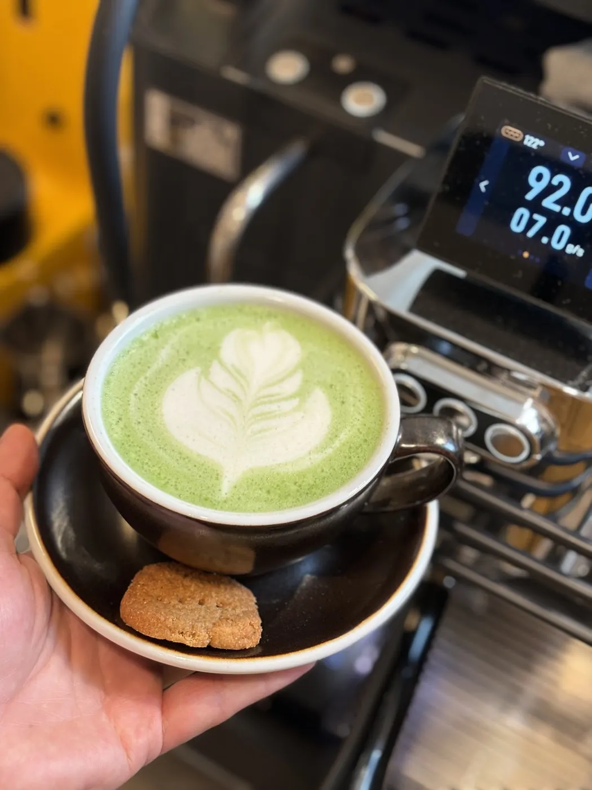
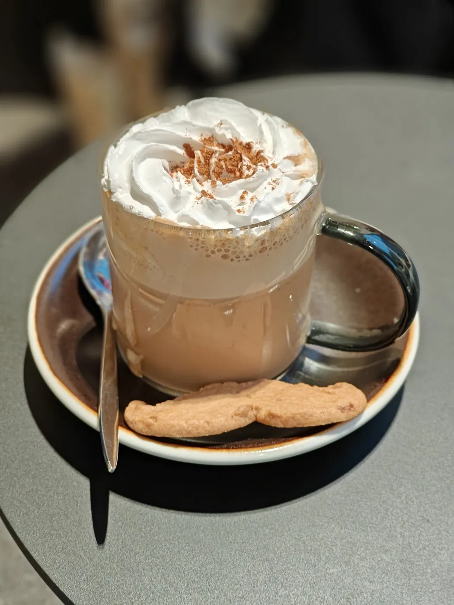
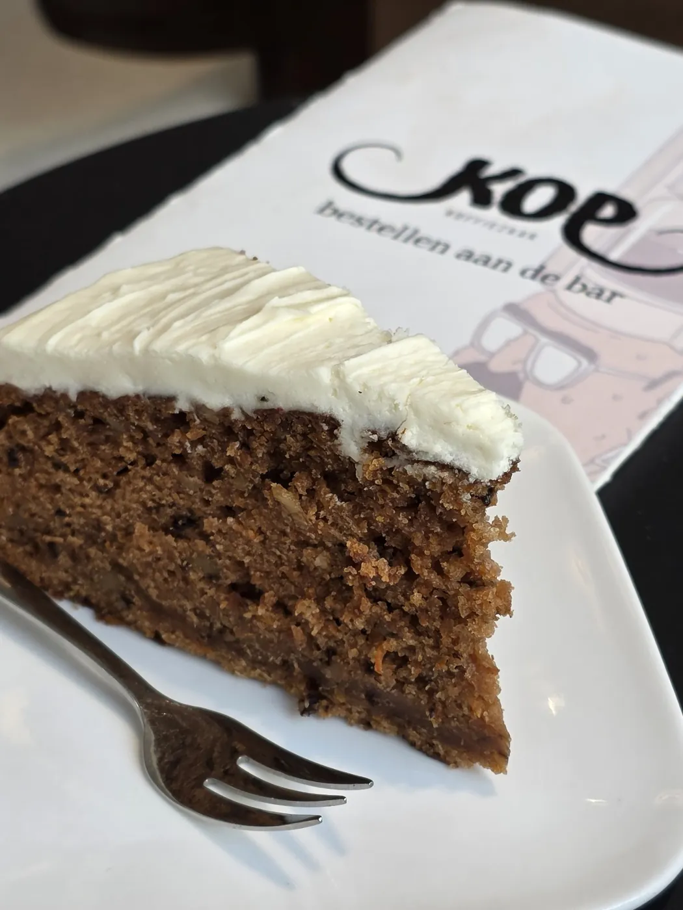
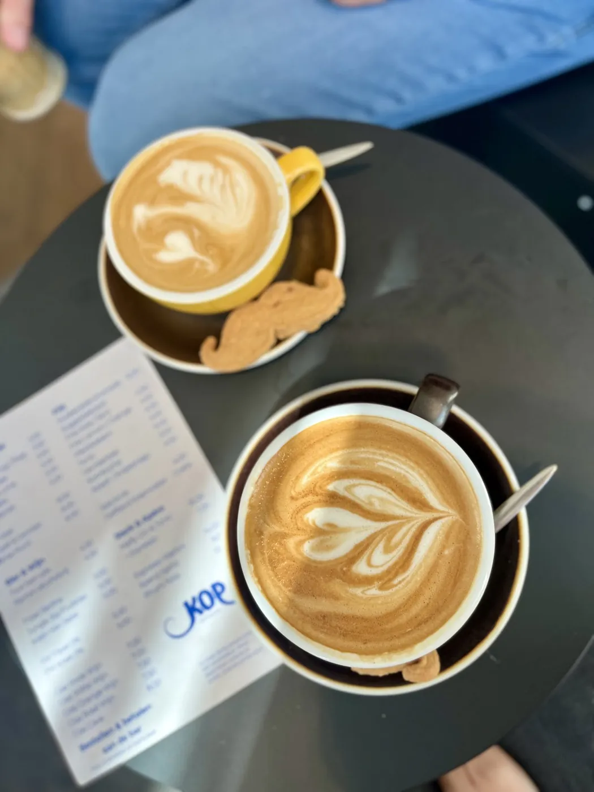
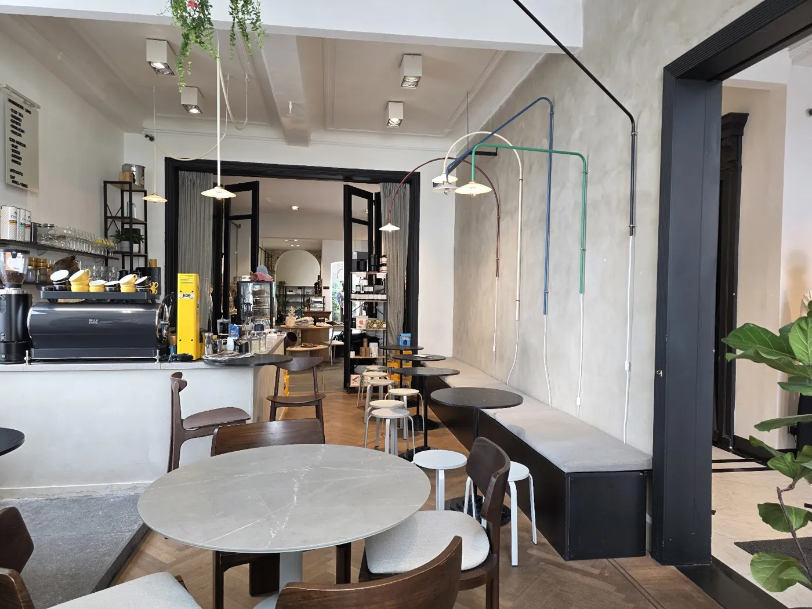
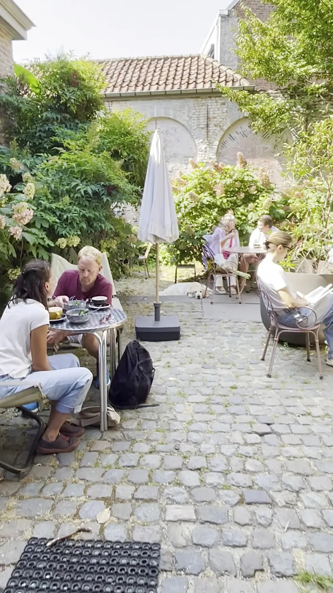

Plantaardig, gewoon standaard
Plantaardige melk in je cappuccino en vegan gebak in de vitrine. Je betaalt er niets extra voor.
Koffie op zijn best, aan het Keizersplein. Alles is in de basis plantaardig. Zonder meerprijs, en zonder dat je iets inlevert op smaak.

Plantaardige melk in je cappuccino en vegan gebak in de vitrine. Je betaalt er niets extra voor.
Erkend door FETAM. Wie hier achter de machine staat, weet wat hij doet, tot en met de latte art.
KOP zit in de zaak van Pastoor. Even shoppen, even zitten, of allebei.
Van een espresso tot een pour over die je samen met de barista kiest. Bestellen doe je gewoon aan de bar.

WitOf een cortado, flat white of latte. Altijd met een tekening erop.

GroenFelgroen, romig en een vaste favoriet in de reviews.

ZoetMet een flinke toef plantaardige room bovenop.

VeganZoals deze carrot cake. Vegan, en daar proef je niets van.

De snor zit in ons logo, op onze ramen en dus ook op je schoteltje. Een klein koekje, een grote glimlach. Klanten vinden het, in hun eigen woorden, een leuke kwinkslag.
Eerst kijken, dan dopen. Of meteen opeten, dat mag ook.
Volg KOP op Instagram
Achteraan ligt een verborgen terras waar je rustig zit als de zon schijnt. Je hond is welkom, en wie wil bijleren, kan bij ons terecht voor een barista-workshop of een afterwork.

Het terras achteraan★★★★★Gemiddeld op Google, uit 74 reviews
"De specialty coffee place to be in Aalst! Dit is koffie op zijn best! Altijd super bereid en goed gesoigneerd. Het prettig gestoorde personeel maakt het helemaal af."SSam Wauters
"Ik heb er geen ander woord voor: TOP! Spitsvondige barista met talent in een heerlijk interieur. Ook mijn Franse bulldog was hier welkom."JJurgen R.
"Superlekkere matcha en koffietjes, vriendelijke bediening en heerlijke gebakjes. Echt een top adresje in Aalst."EElien De Leeuw
Midden in Aalst, binnen in de zaak van Pastoor. Hou de snor op het raam in de gaten.
Ik maakte deze demo voor jullie om te tonen wat er kan. Na een kort gesprek maak ik er iets veel persoonlijkers van, helemaal naar jullie wens.
Vrijblijvend. Ik kom langs of we bellen.
Op maat, op jullie eigen domein.
Geen voorschot. Jullie betalen pas als alles klaar is.
Hosting, domeinnaam en kleine wijzigingen, zoals nieuwe openingsuren.
Omdat een voorbeeld meer zegt dan een mail. Zo zien jullie meteen wat er kan, en het kost jullie niets.
Nee. Het gesprek is vrijblijvend. Vinden jullie het niks, dan is het daarmee gedaan.
Na ons gesprek staat jullie site binnen 10 tot 14 dagen online.
Zeker. Jullie domeinnaam kan gewoon blijven, de nieuwe site komt in de plaats van de oude.
Nee, dat doe ik op basis van ons gesprek. Eigen foto's zijn mooi meegenomen, maar niet nodig om te starten.